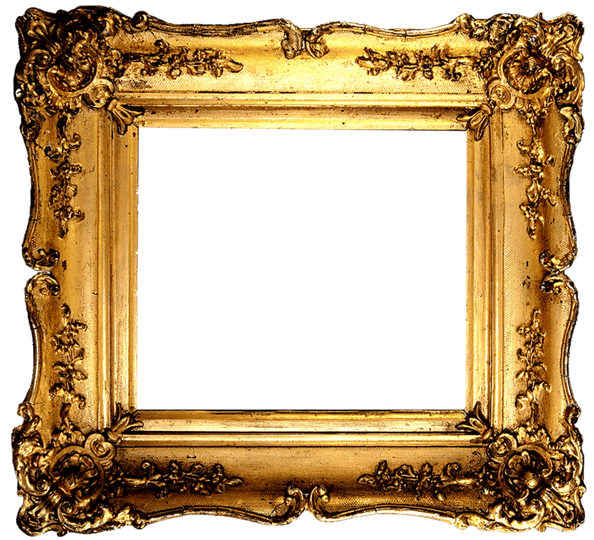

Van Gogh's Self Portrait

Self portrait is an 1889 oil on canvas painting by the post-impressionist artist Vincent van Gogh.
The picture, which may have been van Gogh's last self-portrait, was painted in September that year,
shortly before he left Saint-Rémy-de-Provence in southern France.
More ...